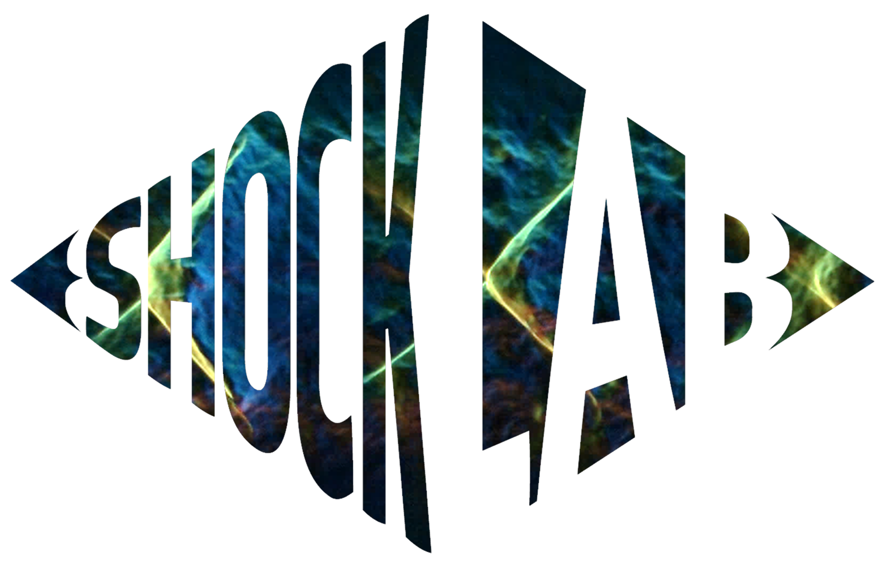
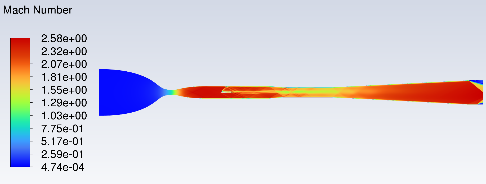
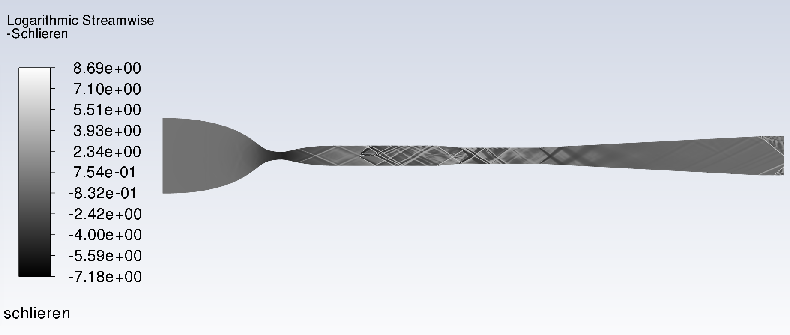

Overview

For my Final Year Project, I am investigating resonance in supersonic inlets, focusing on the buzz mechanism that appears at overspeed conditions. My work combines CFD, supersonic wind tunnel testing and high-speed schlieren imaging to understand and characterise this phenomenon.
Computational Work

I performed CFD analysis to study inlet flow behaviour and tunnel operating conditions, using the results to guide test article design.
Wind Tunnel Testing
Supersonic test articles
I am designing a custom supersonic inlet model tailored for the Shock Lab wind tunnel.
Schlieren

This image is a computational representation I have generated of the expected shock structures. High-speed schlieren images have not yet been captured; I plan to capture these as part of upcoming wind tunnel testing.